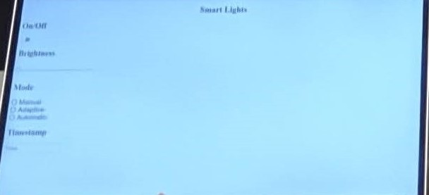

Smart Windows (October 2019)
(From left to right: Nate Labrie, Junhyung Park, Colb Uhlemann of Case Western Reserve University)
Issue
The average Ohio household consumed 892 kWh in 2018. At 11.2 cents per kWh, the average household spent $1,198.85 in 2018. This resulted in approximately 119,552 pounds of pollutants being expelled into the atmosphere. In addition to the cost of electricity, this pollution caused Ohio to be ranked 46th in terms of air quality in 2018.
About Our Project
Integrating machine learning and Internet of Things has the potential to reduce energy consumption. By eliminating power syncs when not needed, i.e. turning the lights off when nobody is within the business and residential area, holds potential to reduce average annual power consumption. With the development of a clear solar cell in 2014 at Michigan State University, it is possible to generate electricity and determine the flux of light entering a room simultaneously. Hence, by combining M.L., I.o.T, and clear solar cells, it is possible to reduce power consumption through sync regulation and solar cell generation. The clear solar cell Smart Window will power LED lights in the house, and lights will be dimmed based upon natural light sources and settings adjusted by the user beforehand.
Process
A model house is built from the birch plywood. A clear solar cell could not be installed due to a lack resources during hackathon A solar panel is installed in order to represent the clear solar cell.

The digital system with Arduino microcontroller was built into the house:
- LCD screen displays the current LED light brightness setting.
- Dial and Buttons allow the user to manually adjust the brightness of the LED light.

Simple Angular Application was developed to be used as a remote to manually turn on and off the lights, control the brightness, and switch to different modes of the lights.